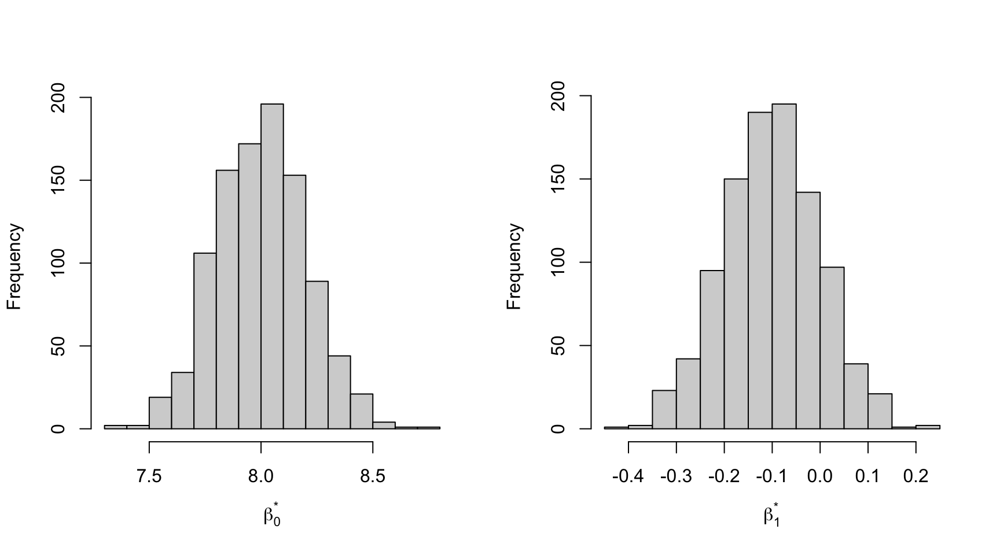
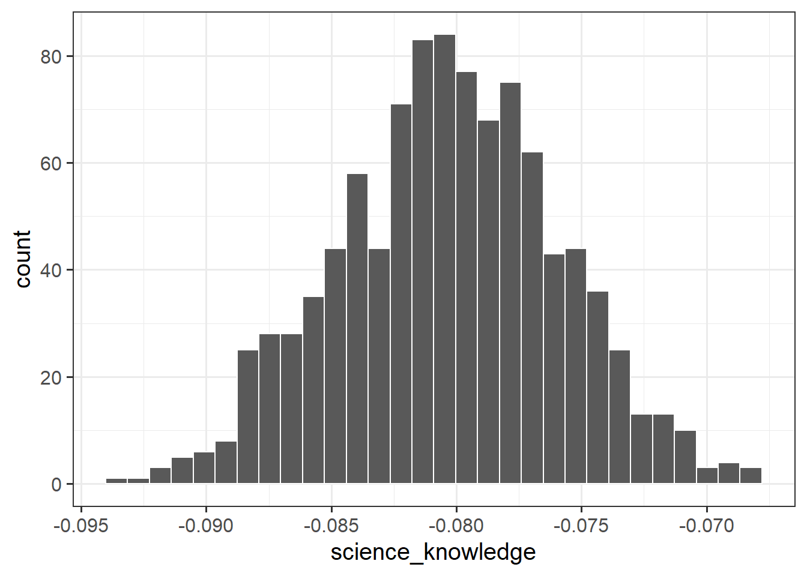
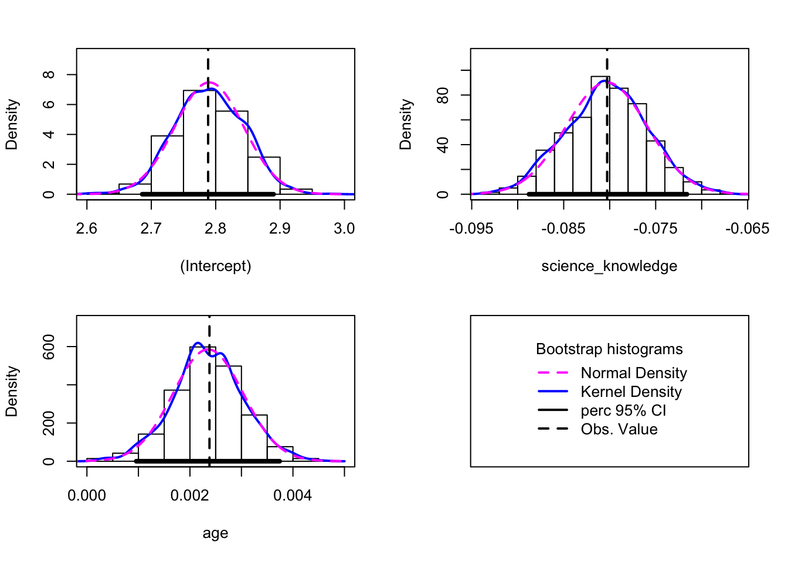

Bootstrap for regression
Suppose in a linear model
\[ y = \beta_0 + \beta_1 x + \epsilon \]
we wish to test whether the slope for the predictor of interest \(x\) is significantly different from 0:
\[ H_0 : \beta_1 = 0 \\ H_1 : \beta_1 \neq 0 \]
The fitted model is written:
\[ \hat y = \widehat \beta_0 + \widehat \beta_1 x \]
and the estimated slope, \(\widehat \beta_1\), computed from the available sample data is an estimate of the unknown population slope \(\beta_1\), which corresponds to the slope if we had all the data for the entire population (but we don’t).
In the past weeks we have used the results from the t-test and corresponding p-values returned by the summary() function. However, such test results are valid only when the regression assumptions are satisfied. In fact, the numbers reported in the p-value column are only correct if the fitted model does not violate the regression assumptions. If it violates them, the results are not trustworthy.
Clearly, now you might wonder, what should we do then if there is no way we can get the model to satisfy the regression assumptions by transforming variables?
Here’s the answer: bootstrap!
This week we examine bootstrapping, which is a technique for drawing inferences to the population from a regression model. This method is assumption-free and does not rely on conditions such as normality of the residuals.
Before continuing, this table summarises the new terms that will be explained throughout the exercises.
Bootstrap Terminology
- A parameter is a numerical summary for the population, e.g. the population slope \(\beta_1\)
- A statistic is a numerical summary calculated from the sample data, e.g. the estimated slope in the sample \(\widehat \beta_1\). We use the sample statistic as a best guess, or estimate, for the unknown population parameter.
- A bootstrap sample is chosen with replacement from an existing sample, using the same sample size.
- A bootstrap statistic is a statistic computed for each bootstrap sample.
- A bootstrap distribution collects bootstrap statistics for many bootstrap samples.
Research question
The research question we will investigate today is:
Is age and knowledge about science associated with attitudes towards science and faith?
Data: Age, Knowledge and Attitudes About Science
This week’s lab explores whether knowledge about science and age are associated with attitudes towards science and faith. To examine these relationships, we will use a subset of data from the 2005 Eurobarometer 63.1 survey.
We can also state this in the form of two research hypotheses:
- There is a significant linear relationship between people’s age and their attitudes to science and faith after accounting for their scientific knowledge.
- There is a significant linear relationship between people’s scientific knowledge and their attitudes to science and faith after accounting for their age.
Description
This example uses three variables from the Eurobarometer 63.1 survey:
| Variable | Description |
|---|---|
| kstot | Score on a science “quiz” composed of 13 true/false items. |
| toomuchscience | Attitude to science and faith (question wording: "We rely too much on science and not enough on faith"; responses on a 5-point scale from strongly disagree to strongly agree). |
| age | Age measured in years. |
The science knowledge quiz has a range of 0 to 13. Its mean is about 8.7. The attitude to science and faith question has five categories, ranging from 0 to 4, with a mean of about 2.5. Age has a range of 15–93, with a mean of about 45. This is formally an ordinal variable but, in line with common practice in applied research, we regard it as continuous, as we do the other two variables as well.
Download link
Download the data here: https://uoepsy.github.io/data/science-faith-attitude.csv
Preview
| v5 | v6 | kstot | age | male | toomuchscience | solveprob |
|---|---|---|---|---|---|---|
| 1 | 2 | 12 | 35 | 1 | 2 | 0 |
| 2 | 2 | 11 | 34 | 0 | 1 | 1 |
| 3 | 2 | 7 | 40 | 0 | NA | NA |
| 4 | 2 | 9 | 32 | 0 | 3 | 0 |
| 5 | 2 | 6 | 35 | 0 | 3 | 1 |
| 6 | 2 | 11 | 67 | 1 | NA | NA |
Exercises
Read the data into R, and call the data
ebsurvey. Remember, you can download the data here: https://uoepsy.github.io/data/science-faith-attitude.csvHow many observations and how many variables are there?
Today we will be only using the
kstot,age, andtoomuchsciencecolumns. Subset the data to only have those 3 columns.Is there any missing values? If yes, remove the rows with missing values.
Give the variables more meaningful names. Rename kstot to science_knowledge and rename toomuchscience to attitude.
Hint
Have a look at the help page of the function rename: ?rename.
Before producing multiple regression models, it is a good idea to visually inspect each variable.
Explore the distribution of age in years, age.
Explore the distribution of science knowledge quiz scores, science_knowledge.
Explore the distribution of attitude to science and faith scores, attitude.

Visualise the pairwise relationships between your variables and explore the possible correlations.
Now that we have explored each variable by itself, we can estimate the multiple regression model.
\[ \text{attitude}_i = \beta_0 + \beta_1 \ \text{science_knowledge}_i + \beta_2 + \text{age}_i + \epsilon_i \]
Regression results are often presented in a table that reports the coefficient estimates, their estimated standard errors, t-scores, and levels of statistical significance.
- Fit the model specified above using R
- Check for violations of the model assumptions.
- Do you believe the regression assumptions are violated?

If you are doubting that the model assumptions are satisfied, don’t throw your PC up in the air, but rather keep reading!
The Bootstrap
The bootstrap is a general approach to assessing whether the sample results are statistically significant or not, which does not rely on specific distributional assumptions such as normality of the errors. It is based on sampling repeatedly with replacement (to avoid always getting the original sample exactly) from the data at hand, and then computing the regression coefficients from each resample. We will equivalently use the word “bootstrap sample” or “resample” (for sample with replacement).
The basic principle is:
The population is to the original sample
as
the original sample is to the bootstrap samples.
Because we only have one sample of size \(n\), and we do not have access to the data for the entire population, we consider our original sample as our best approximation to the population. To be more precise, we assume that the population is made up of many, many copies of our original sample. Then, we take multiple samples each of size \(n\) from this assumed population. This is equivalent to sampling with replacement from the original sample.

Let’s see how this works in practice. Consider this as the original sample of \(n = 4\) individuals:
\[ \begin{matrix} \text{Individual, }i & \text{Response, }y & \text{Predictor, }x \\ 1 & 10.2 & 7 \\ 2 & 5.7 & 4 \\ 3 & 8.0 & 5 \\ 4 & 9.1 & 3 \\ \end{matrix} \]
or, more compactly, the original sample is:
\[ (10.2, 7), (5.7, 4), (8.0, 5), (9.1, 3) \]
A bootstrap sample is obtained by sampling 4 pairs from the original sample, with replacement. One such bootstrap sample could be: \[ (8.0, 5), (5.7, 4), (8.0, 5), (9.1, 3) \]
You can see in the above, that it may happen to have repeated values in the bootstrap sample.
Then, fitting the linear model to these data, we can obtain a bootstrap intercept and bootstrap slope
y <- c(8, 5.7, 8, 9.1)
x <- c(5, 4, 5, 3)
coef(lm(y ~ x))## (Intercept) x
## 8.9363636 -0.2909091\[ \widehat \beta_0^* = 8.94 \qquad \widehat \beta_1^* = -0.29 \]
Now, imagine doing this many times. That is, taking many bootstrap samples (say \(R = 1,000\)), each of size \(n = 4\) individuals, and computing the regression intercept and slope for each bootstrap sample. You will obtain \(R\) bootstrap intercepts and \(R\) bootstrap slopes.
You can visualise the distribution of the bootstrap intercept and slopes with histograms: 
That sounds all nice in theory! But how do I actually do this in R? Is it difficult???
No, it’s super easy! Follow these steps:
Step 1. Load the car library
library(car)Step 2. Use the Boot() function (do not forget the uppercase B!) which takes as arguments:
- the fitted model
f, saying which bootstrap statistics to compute on each bootstrap sample. By defaultf = coef, returning the regression coefficients.R, saying how many bootstrap samples to compute. By defaultR = 999but this could be any number. To experiment we recommend 1000, when you want to produce results for journals, it is typical to go with 10,000 or more.ncores, saying if to perform the calculations in parallel (and more efficiently). However, this will depend on your PC, and you need to find how many cores you have by runningparallel::detectCores()on your PC. By default the function usesncores = 1.
Step 3. Run the code. However, please remember that the Boot() function does not want a model which was fitted using data with NAs. In our case we are fine because we already removed them with na.omit.
boot_mdl <- Boot(mdl, R = 1000)Step 4. Look at the summary of the bootstrap results:
summary(boot_mdl)##
## Number of bootstrap replications R = 1000
## original bootBias bootSE bootMed
## (Intercept) 2.7882487 1.7809e-03 0.05336055 2.7906120
## science_knowledge -0.0802763 -4.6092e-05 0.00442448 -0.0802842
## age 0.0023794 -2.5842e-05 0.00068194 0.0023333The above output shows, for each regression coefficient, the value in the original sample in the column original, and then we will focus on the bootSE column, which estimates the variability of the coefficient from bootstrap sample to bootstrap sample. The bootSE provides us the bootstrap standard error, or bootstrap SE in short. We use this to answer the key question of how accurate our estimate is.
Step 5. Compute confidence intervals. Use your preferred confidence level, by default this is 95%:
Confint(boot_mdl, level = 0.95, type = "perc")## Bootstrap percent confidence intervals
##
## Estimate 2.5 % 97.5 %
## (Intercept) 2.788248712 2.6859109098 2.889940947
## science_knowledge -0.080276256 -0.0887702692 -0.071603932
## age 0.002379446 0.0009578011 0.003741873The type = "perc" argument tells R to return the values that comprise 95% of all values in between them, i.e. the value with 2.5% of observations below it and the value with 2.5% of observations above it and 97.5% of observations below it.
If you want to make it into a nice table:
Confint(boot_mdl, type = "perc") %>%
kable(digits = 3, caption = 'Bootstrap 95% CIs') %>%
kable_styling(full_width = FALSE)| Estimate | 2.5 % | 97.5 % | |
|---|---|---|---|
| (Intercept) | 2.788 | 2.686 | 2.890 |
| science_knowledge | -0.080 | -0.089 | -0.072 |
| age | 0.002 | 0.001 | 0.004 |
We are 95% confident that the population intercept is between 2.68 and 2.90. We are 95% confident that the population slope for science knowledge is between -0.09 and -0.07. We are 95% confident that the population slope for age is between 0.001 and 0.004.
Intercept
The results in Table 4 report an estimate of the intercept (or constant) as equal to approximately 2.79. The constant of a multiple regression model can be interpreted as the average expected value of the dependent variable when all of the independent variables equal zero. In this case, the independent variable science knowledge has only a handful of respondents that score zero, and no one is aged zero, so the constant by itself does not tell us much. Researchers do not often have predictions based on the intercept, so it often receives little attention. A better choice would be to mean centre age, and refit the model with a mean centred age variable!
Science knowledge slope
The estimated value for the slope coefficient linking knowledge to attitude is estimated to be approximately -0.08. This represents the average marginal effect of knowledge on attitude, and can be interpreted as the expected change in the dependent variable on average for a one-unit increase in the independent variable, controlling for age. In this example, every increase in quiz score by one point is associated with a decrease in attitude score of about –0.08, adjusted for age. Bearing in mind the valence of the question wording, this means that those who are more knowledgeable tend to be more favourable towards science – i.e. disagreeing with the statement.
Age slope
The slope coefficient linking age to attitude is estimated to be approximately 0.002. This represents the average marginal effect of each additional year on attitude, and can be interpreted as the expected change in the dependent variable on average for a one-unit increase in the independent variable, controlling for science knowledge. For this example, that means that for every year older a person is, their attitude score is expected to increase by 0.002, controlling for science knowledge. This may seem like a very small effect, but remember that this is the effect of only one additional year. Bearing in mind the valence of the question wording, this means that older people tend to be less favourable towards science – i.e. agreeing with the statement.
The bootstrap confidence intervals table also reports that the 95% confidence intervals for both slope estimates do not include 0. This leads us to reject both null hypotheses at the 5% significance level, and conclude that there appear to be relationships for both age and science knowledge with attitude to science and faith.
Remember the summary of them model:
summary(mdl)##
## Call:
## lm(formula = attitude ~ science_knowledge + age, data = ebsurvey)
##
## Residuals:
## Min 1Q Median 3Q Max
## -2.88643 -0.97484 0.00913 0.88427 2.21489
##
## Coefficients:
## Estimate Std. Error t value Pr(>|t|)
## (Intercept) 2.7882487 0.0537759 51.849 < 2e-16 ***
## science_knowledge -0.0802763 0.0045095 -17.802 < 2e-16 ***
## age 0.0023794 0.0006792 3.503 0.000461 ***
## ---
## Signif. codes: 0 '***' 0.001 '**' 0.01 '*' 0.05 '.' 0.1 ' ' 1
##
## Residual standard error: 1.196 on 10500 degrees of freedom
## Multiple R-squared: 0.03223, Adjusted R-squared: 0.03204
## F-statistic: 174.8 on 2 and 10500 DF, p-value: < 2.2e-16The R-squared for the model is 0.031, which means that approximately 3% of the variance in attitude is explained by science knowledge and age.
How can we visualise the bootstrap intercepts and slopes? They are stored in the boot_mdl object.
This will show you the \(R = 1000\) estimates, using head to show only the top 6.
head(boot_mdl$t)## (Intercept) science_knowledge age
## [1,] 2.736176 -0.07544872 0.002590834
## [2,] 2.798605 -0.07985701 0.001762165
## [3,] 2.748294 -0.07471438 0.001978664
## [4,] 2.822838 -0.08520539 0.002366432
## [5,] 2.800905 -0.07965154 0.002047476
## [6,] 2.873167 -0.08809269 0.002115399While this shows you the estimated intercept and slope in the original sample
boot_mdl$t0## (Intercept) science_knowledge age
## 2.788248712 -0.080276256 0.002379446You can visualise the uncertainty in the estimates by plotting histograms either manually:
plot_data <- as_tibble(boot_mdl$t)
plot_data## # A tibble: 1,000 x 3
## `(Intercept)` science_knowledge age
## <dbl> <dbl> <dbl>
## 1 2.74 -0.0754 0.00259
## 2 2.80 -0.0799 0.00176
## 3 2.75 -0.0747 0.00198
## 4 2.82 -0.0852 0.00237
## 5 2.80 -0.0797 0.00205
## 6 2.87 -0.0881 0.00212
## 7 2.83 -0.0847 0.00280
## 8 2.86 -0.0847 0.00179
## 9 2.82 -0.0795 0.00198
## 10 2.76 -0.0753 0.00231
## # ... with 990 more rowsggplot(plot_data, aes(science_knowledge)) +
geom_histogram(color = 'white')
Or using the built-in function from the car package, which simply takes the bootstrap results boot_mdl:
hist(boot_mdl, ci = "perc", legend = "separate")
Presenting results
Write a short paragraph summarising the results of this lab.
Include:
- A brief description of which data were used to answer which questions.
- A plot of your variables and summary statistics.
- Describe your model and report results
- Interpret results in context.

References
Adapted from:
- Allum, N. (2015). Learn about multiple regression in SPSS with data from the eurobarometer (63.1, jan–feb 2005). In SAGE Research Methods Datasets Part 1. SAGE Publications, Ltd.